Parallel Lines in SpaceHai đường thẳng song song
Grade 11 · Topic: Parallelism in SpaceLớp 11 · Chủ đề: Quan hệ song song trong không gian
1Lesson IntroductionGiới thiệu bài học
Learning goalsMục tiêu bài học
By the end of this lesson you can:
Sau bài học này, em có thể:
tell parallel, intersecting and skew lines;
phân biệt hai đường thẳng song song, cắt nhau và chéo nhau;
use the transitive property and the theorem on the line of intersection of two planes;
dùng tính chất bắc cầu và định lí về giao tuyến của hai mặt phẳng;
prove that two lines are parallel using a midline or a parallelogram;
chứng minh hai đường thẳng song song nhờ đường trung bình của tam giác hoặc hình bình hành;
solve simple problems on pyramids and tetrahedra.
giải bài toán đơn giản về hình chóp và tứ diện.
2Mathematical VocabularyTừ vựng Toán học
parallel lines – lines in the same plane with no common point.
hai đường thẳng song song – hai đường thẳng cùng nằm trong một mặt phẳng và không có điểm chung.
skew lines – lines that are not in one plane, so they never meet.
hai đường thẳng chéo nhau – hai đường thẳng không cùng nằm trong một mặt phẳng nên không có điểm chung.
intersecting lines – lines in one plane with exactly one common point.
hai đường thẳng cắt nhau – hai đường thẳng cùng nằm trong một mặt phẳng và có đúng một điểm chung.
midline of a triangle – the segment joining the midpoints of two sides; parallel to the third side, half as long.
đường trung bình của tam giác – đoạn nối trung điểm hai cạnh; song song với cạnh thứ ba và bằng một nửa cạnh đó.
transitive property – if \(a\parallel c\) and \(b\parallel c\) then \(a\parallel b\).
tính chất bắc cầu – nếu \(a\parallel c\) và \(b\parallel c\) thì \(a\parallel b\).
prove – show that a statement is true with reasons.
chứng minh – chỉ ra một khẳng định đúng bằng lập luận.
parallelogram – a quadrilateral with two pairs of parallel sides.
hình bình hành – tứ giác có hai cặp cạnh đối song song.
3Useful English PhrasesCụm từ tiếng Anh thường gặp
Prove that the two lines are parallel.
Chứng minh hai đường thẳng song song.
The lines are skew.
Hai đường thẳng chéo nhau.
\(MN\) is a midline of the triangle.
\(MN\) là đường trung bình của tam giác.
How many pairs of parallel edges are there?
Có bao nhiêu cặp cạnh song song?
Find the line of intersection.
Tìm giao tuyến.
4Prerequisite ReviewÔn tập kiến thức nền
In a plane, \(a\parallel c\) and \(b\parallel c\) give \(a\parallel b\). A midline of a triangle is parallel to the third side and equals half of it. In a parallelogram, the opposite sides are parallel and equal.
Trong mặt phẳng, \(a\parallel c\) và \(b\parallel c\) thì \(a\parallel b\). Đường trung bình của tam giác song song với cạnh thứ ba và bằng một nửa cạnh đó. Trong hình bình hành, các cạnh đối song song và bằng nhau.
5TheoryLý thuyết
5.1 Positions of two linesVị trí tương đối của hai đường thẳng
Three casesBa trường hợp
Parallel: in one plane, no common point.
Song song: cùng mặt phẳng, không có điểm chung.
Intersecting: in one plane, exactly one common point.
Cắt nhau: cùng mặt phẳng, có đúng một điểm chung.
Skew: not in one plane (no common point).
Chéo nhau: không cùng mặt phẳng (không có điểm chung).
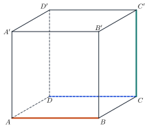
5.2 Theorems on parallel linesCác định lí về hai đường thẳng song song
TheoremsĐịnh lí
Through a point outside a line there is exactly one line parallel to it.
Qua một điểm nằm ngoài đường thẳng có một và chỉ một đường thẳng song song với đường thẳng đó.
Transitive property: \(a\parallel c\) and \(b\parallel c\) imply \(a\parallel b\).
Tính chất bắc cầu: \(a\parallel c\) và \(b\parallel c\) thì \(a\parallel b\).
If \((P)\) and \((Q)\) meet along \(c\), \(a\subset(P)\), \(b\subset(Q)\) and \(a\parallel b\), then \(c\parallel a\parallel b\) (or \(c\) is the same as one of them).
Nếu hai mặt phẳng \((P)\), \((Q)\) cắt nhau theo giao tuyến \(c\), \(a\subset(P)\), \(b\subset(Q)\) và \(a\parallel b\) thì \(c\parallel a\parallel b\) (hoặc \(c\) trùng với một trong hai đường).
5.3 Proving two lines are parallelCách chứng minh hai đường thẳng song song
Common toolsCông cụ thường dùng
Midline of a triangle: \(M,N\) midpoints of \(SA,SB\) give \(MN\parallel AB\), \(MN=\dfrac12AB\).
Đường trung bình: \(M,N\) là trung điểm \(SA,SB\) thì \(MN\parallel AB\), \(MN=\dfrac12AB\).
Parallelogram: opposite sides are parallel.
Hình bình hành: các cạnh đối song song.
Transitive property: show both lines are parallel to a third line.
Tính chất bắc cầu: chứng minh cả hai cùng song song với đường thứ ba.
Watch out!Lưu ý
Two lines with no common point are not always parallel: they may be skew. Parallel lines must be in one plane.
Hai đường thẳng không có điểm chung chưa chắc song song: có thể chéo nhau. Hai đường thẳng song song phải cùng nằm trong một mặt phẳng.
6Worked ExamplesVí dụ có lời giải
ExampleVí dụ 1BasicCơ bản – Name the positionsGọi tên vị trí
In the cube \(ABCD.A'B'C'D'\), state the position of: \(AB\) and \(CD\); \(AB\) and \(AD\); \(AB\) and \(CC'\).
Trong hình lập phương \(ABCD.A'B'C'D'\), nêu vị trí của: \(AB\) và \(CD\); \(AB\) và \(AD\); \(AB\) và \(CC'\).
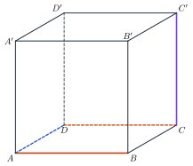
Analysis: Check whether the two lines are in one plane and whether they meet.
Phân tích: Xét hai đường có cùng mặt phẳng không và có cắt nhau không.
\(AB\) and \(CD\): in the face \(ABCD\), no common point.
\(AB\) và \(CD\): cùng nằm trong mặt \(ABCD\), không có điểm chung.
\(AB\) and \(AD\) meet at \(A\). \(AB\) and \(CC'\) are not in one plane.
\(AB\) và \(AD\) cắt nhau tại \(A\). \(AB\) và \(CC'\) không cùng mặt phẳng.
Parallel; intersecting; skew.
Song song; cắt nhau; chéo nhau.
ExampleVí dụ 2BasicCơ bản – Count parallel edgesĐếm cặp cạnh song song
How many pairs of parallel edges does a cube have?
Hình lập phương có bao nhiêu cặp cạnh song song?
Analysis: The 12 edges form 3 groups of 4 parallel edges.
Phân tích: 12 cạnh chia thành 3 nhóm, mỗi nhóm 4 cạnh song song.
In one group of 4 edges, the pairs are \(\binom42=6\).
Trong một nhóm 4 cạnh có \(\binom42=6\) cặp.
\(3\cdot6=18\) pairs.
\(3\cdot6=18\) cặp.
ExampleVí dụ 3IntermediateTrung bình – Midline in a pyramidĐường trung bình trong hình chóp
\(S.ABCD\) has a parallelogram base. \(M\), \(N\) are the midpoints of \(SA\), \(SB\). Prove \(MN\parallel CD\).
Cho hình chóp \(S.ABCD\) đáy là hình bình hành; \(M\), \(N\) là trung điểm \(SA\), \(SB\). Chứng minh \(MN\parallel CD\).
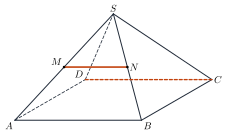
Analysis: Use the midline, then the transitive property.
Phân tích: Dùng đường trung bình, rồi tính chất bắc cầu.
\(MN\) is a midline of \(\triangle SAB\), so \(MN\parallel AB\).
\(MN\) là đường trung bình của \(\triangle SAB\) nên \(MN\parallel AB\).
\(AB\parallel CD\) (parallelogram).
\(AB\parallel CD\) (hình bình hành).
By the transitive property, \(MN\parallel CD\).
Theo tính chất bắc cầu, \(MN\parallel CD\).
ExampleVí dụ 4IntermediateTrung bình – Midpoints of a tetrahedronTrung điểm các cạnh tứ diện
\(M,N,P,Q\) are the midpoints of \(AB,BC,CD,DA\) in the tetrahedron \(ABCD\). Prove \(MNPQ\) is a parallelogram. If \(AC=6\) and \(BD=8\), find its perimeter.
Cho tứ diện \(ABCD\), \(M,N,P,Q\) là trung điểm \(AB,BC,CD,DA\). Chứng minh \(MNPQ\) là hình bình hành. Nếu \(AC=6\), \(BD=8\), tính chu vi.
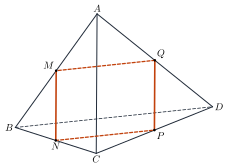
Analysis: Look at the triangles \(ABC\) and \(ACD\) that share \(AC\).
Phân tích: Xét hai tam giác \(ABC\) và \(ACD\) có chung \(AC\).
\(MN\parallel AC\), \(MN=\dfrac12AC\) (midline of \(ABC\)); \(QP\parallel AC\), \(QP=\dfrac12AC\) (midline of \(ADC\)).
\(MN\parallel AC\), \(MN=\dfrac12AC\) (đường trung bình \(ABC\)); \(QP\parallel AC\), \(QP=\dfrac12AC\) (đường trung bình \(ADC\)).
So \(MN\parallel QP\) and \(MN=QP\): \(MNPQ\) is a parallelogram. Similarly \(NP=MQ=\dfrac12BD=4\).
Do đó \(MN\parallel QP\), \(MN=QP\): \(MNPQ\) là hình bình hành. Tương tự \(NP=MQ=\dfrac12BD=4\).
Perimeter \(=2(3+4)=14\).
Chu vi \(=2(3+4)=14\).
ExampleVí dụ 5AdvancedNâng cao – Line of intersection parallel to a base sideGiao tuyến song song với cạnh đáy
\(S.ABCD\) has a parallelogram base. Find the line of intersection of \((SAB)\) and \((SCD)\).
Cho hình chóp \(S.ABCD\) đáy là hình bình hành. Tìm giao tuyến của \((SAB)\) và \((SCD)\).
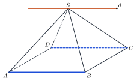
Analysis: \(S\) is a common point; find the direction using \(AB\parallel CD\).
Phân tích: \(S\) là điểm chung; tìm phương nhờ \(AB\parallel CD\).
\(AB\subset(SAB)\), \(CD\subset(SCD)\) and \(AB\parallel CD\).
\(AB\subset(SAB)\), \(CD\subset(SCD)\) và \(AB\parallel CD\).
So the line of intersection passes through \(S\) and is parallel to \(AB\) and \(CD\).
Nên giao tuyến đi qua \(S\) và song song với \(AB\), \(CD\).
The line through \(S\) parallel to \(AB\).
Đường thẳng qua \(S\) song song với \(AB\).
7PracticeBài tập luyện tập
A. Multiple ChoiceA. Trắc nghiệm nhiều lựa chọn
How many pairs of edges of a tetrahedron are skew (not coplanar)?
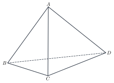
Có bao nhiêu cặp cạnh của tứ diện chéo nhau?
Answer: a. Check each pair of edges: 3.
Đáp án a. Xét từng cặp cạnh: 3.
In the pyramid \(S.ABCD\), \(M, N\) are the midpoints of \(SA, SB\). If \(AB=16\), then \(MN=\)…
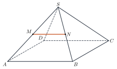
Trong hình chóp \(S.ABCD\), \(M, N\) là trung điểm của \(SA, SB\). Nếu \(AB=16\) thì \(MN=\)…
Answer: d. Midline: \(MN=\dfrac12AB=8\).
Đáp án d. Đường trung bình: \(MN=\dfrac12AB=8\).
In the tetrahedron \(ABCD\), \(M, N, P, Q\) are the midpoints of \(AB, BC, CD, DA\). If \(AC=12\) and \(BD=16\), the perimeter of \(MNPQ\) is…
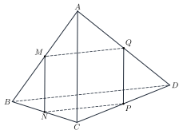
Cho tứ diện \(ABCD\), \(M, N, P, Q\) là trung điểm của \(AB, BC, CD, DA\). Biết \(AC=12\), \(BD=16\). Chu vi tứ giác \(MNPQ\) bằng…
Answer: d. \(MN=PQ=\dfrac{AC}2\), \(NP=MQ=\dfrac{BD}2\): perimeter \(=AC+BD=28\).
Đáp án d. \(MN=PQ=\dfrac{AC}2\), \(NP=MQ=\dfrac{BD}2\): chu vi \(=AC+BD=28\).
B. True or FalseB. Đúng hoặc sai
Two skew lines have no common point.
Hai đường thẳng chéo nhau thì không có điểm chung.
Skew lines are not coplanar and do not meet.
Hai đường thẳng chéo nhau không đồng phẳng và không cắt nhau.
In a cube \(ABCD.A'B'C'D'\), \(AB\) and \(C'D'\) are parallel.
Trong hình lập phương \(ABCD.A'B'C'D'\), \(AB\) và \(C'D'\) song song.
\(AB\parallel CD\parallel C'D'\).
\(AB\parallel CD\parallel C'D'\).
C. Short AnswerC. Trả lời ngắn
In the tetrahedron \(ABCD\), \(G\) and \(H\) are the centroids of triangles \(ABC\) and \(ABD\). Given \(CD=12\), find \(GH\).
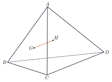
Cho tứ diện \(ABCD\), \(G\) và \(H\) lần lượt là trọng tâm các tam giác \(ABC\) và \(ABD\). Biết \(CD=12\), tính \(GH\).
Enter a number.
Nhập một số.
With \(I\) the midpoint of \(AB\): \(\dfrac{IG}{IC}=\dfrac{IH}{ID}=\dfrac13\), so \(GH\parallel CD\), \(GH=\dfrac{CD}3=4\).
Gọi \(I\) là trung điểm \(AB\): \(\dfrac{IG}{IC}=\dfrac{IH}{ID}=\dfrac13\) nên \(GH\parallel CD\), \(GH=\dfrac{CD}3=4\).
In the tetrahedron \(ABCD\), \(AC\perp BD\), \(AC=12\), \(BD=16\); \(M, N, P, Q\) are the midpoints of \(AB, BC, CD, DA\). Find the area of \(MNPQ\).
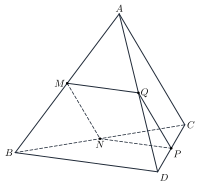
Cho tứ diện \(ABCD\) có \(AC\perp BD\), \(AC=12\), \(BD=16\); \(M, N, P, Q\) là trung điểm của \(AB, BC, CD, DA\). Tính diện tích tứ giác \(MNPQ\).
Enter a number.
Nhập một số.
\(MNPQ\) is a rectangle with sides \(\dfrac{AC}2\), \(\dfrac{BD}2\): area \(48\).
\(MNPQ\) là hình chữ nhật có hai cạnh \(\dfrac{AC}2\), \(\dfrac{BD}2\): diện tích \(48\).
A. Multiple ChoiceA. Trắc nghiệm nhiều lựa chọn
How many pairs of edges of a triangular prism ABC.A′B′C′ are skew (not coplanar)?
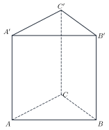
Có bao nhiêu cặp cạnh của lăng trụ tam giác ABC.A′B′C′ chéo nhau?
Answer: b. Check each pair of edges: 12.
Đáp án b. Xét từng cặp cạnh: 12.
In the pyramid \(S.ABCD\), \(M, N\) are the midpoints of \(SA, SB\). If \(AB=10\), then \(MN=\)…
Trong hình chóp \(S.ABCD\), \(M, N\) là trung điểm của \(SA, SB\). Nếu \(AB=10\) thì \(MN=\)…
Answer: d. Midline: \(MN=\dfrac12AB=5\).
Đáp án d. Đường trung bình: \(MN=\dfrac12AB=5\).
In the tetrahedron \(ABCD\), \(M, N, P, Q\) are the midpoints of \(AB, BC, CD, DA\). If \(AC=6\) and \(BD=10\), the perimeter of \(MNPQ\) is…
Cho tứ diện \(ABCD\), \(M, N, P, Q\) là trung điểm của \(AB, BC, CD, DA\). Biết \(AC=6\), \(BD=10\). Chu vi tứ giác \(MNPQ\) bằng…
Answer: d. \(MN=PQ=\dfrac{AC}2\), \(NP=MQ=\dfrac{BD}2\): perimeter \(=AC+BD=16\).
Đáp án d. \(MN=PQ=\dfrac{AC}2\), \(NP=MQ=\dfrac{BD}2\): chu vi \(=AC+BD=16\).
B. True or FalseB. Đúng hoặc sai
Through a point not on a line there are infinitely many lines parallel to it.
Qua một điểm nằm ngoài một đường thẳng có vô số đường thẳng song song với đường thẳng đó.
There is exactly one.
Có đúng một đường thẳng.
In a cube \(ABCD.A'B'C'D'\), \(AB\) and \(DD'\) intersect.
Trong hình lập phương \(ABCD.A'B'C'D'\), \(AB\) và \(DD'\) cắt nhau.
They are skew.
Chúng chéo nhau.
C. Short AnswerC. Trả lời ngắn
In the tetrahedron \(ABCD\), \(G\) and \(H\) are the centroids of triangles \(ABC\) and \(ABD\). Given \(CD=18\), find \(GH\).
Cho tứ diện \(ABCD\), \(G\) và \(H\) lần lượt là trọng tâm các tam giác \(ABC\) và \(ABD\). Biết \(CD=18\), tính \(GH\).
Enter a number.
Nhập một số.
With \(I\) the midpoint of \(AB\): \(\dfrac{IG}{IC}=\dfrac{IH}{ID}=\dfrac13\), so \(GH\parallel CD\), \(GH=\dfrac{CD}3=6\).
Gọi \(I\) là trung điểm \(AB\): \(\dfrac{IG}{IC}=\dfrac{IH}{ID}=\dfrac13\) nên \(GH\parallel CD\), \(GH=\dfrac{CD}3=6\).
In the tetrahedron \(ABCD\), \(AC\perp BD\), \(AC=14\), \(BD=16\); \(M, N, P, Q\) are the midpoints of \(AB, BC, CD, DA\). Find the area of \(MNPQ\).
Cho tứ diện \(ABCD\) có \(AC\perp BD\), \(AC=14\), \(BD=16\); \(M, N, P, Q\) là trung điểm của \(AB, BC, CD, DA\). Tính diện tích tứ giác \(MNPQ\).
Enter a number.
Nhập một số.
\(MNPQ\) is a rectangle with sides \(\dfrac{AC}2\), \(\dfrac{BD}2\): area \(56\).
\(MNPQ\) là hình chữ nhật có hai cạnh \(\dfrac{AC}2\), \(\dfrac{BD}2\): diện tích \(56\).
A. Multiple ChoiceA. Trắc nghiệm nhiều lựa chọn
How many pairs of edges of a triangular prism ABC.A′B′C′ are intersecting?
Có bao nhiêu cặp cạnh của lăng trụ tam giác ABC.A′B′C′ cắt nhau?
Answer: b. Check each pair of edges: 18.
Đáp án b. Xét từng cặp cạnh: 18.
In the pyramid \(S.ABCD\), \(M, N\) are the midpoints of \(SA, SB\). If \(AB=20\), then \(MN=\)…
Trong hình chóp \(S.ABCD\), \(M, N\) là trung điểm của \(SA, SB\). Nếu \(AB=20\) thì \(MN=\)…
Answer: a. Midline: \(MN=\dfrac12AB=10\).
Đáp án a. Đường trung bình: \(MN=\dfrac12AB=10\).
In the tetrahedron \(ABCD\), \(M, N, P, Q\) are the midpoints of \(AB, BC, CD, DA\). If \(AC=16\) and \(BD=20\), the perimeter of \(MNPQ\) is…
Cho tứ diện \(ABCD\), \(M, N, P, Q\) là trung điểm của \(AB, BC, CD, DA\). Biết \(AC=16\), \(BD=20\). Chu vi tứ giác \(MNPQ\) bằng…
Answer: d. \(MN=PQ=\dfrac{AC}2\), \(NP=MQ=\dfrac{BD}2\): perimeter \(=AC+BD=36\).
Đáp án d. \(MN=PQ=\dfrac{AC}2\), \(NP=MQ=\dfrac{BD}2\): chu vi \(=AC+BD=36\).
B. True or FalseB. Đúng hoặc sai
If \(a\parallel c\) and \(b\parallel c\) (three different lines), then \(a\parallel b\).
Nếu \(a\parallel c\) và \(b\parallel c\) (ba đường thẳng phân biệt) thì \(a\parallel b\).
Two lines parallel to a third line are parallel.
Hai đường thẳng phân biệt cùng song song với đường thẳng thứ ba thì song song.
Two lines with no common point are parallel.
Hai đường thẳng không có điểm chung thì song song.
They may be skew.
Chúng có thể chéo nhau.
C. Short AnswerC. Trả lời ngắn
In the tetrahedron \(ABCD\), \(G\) and \(H\) are the centroids of triangles \(ABC\) and \(ABD\). Given \(CD=15\), find \(GH\).
Cho tứ diện \(ABCD\), \(G\) và \(H\) lần lượt là trọng tâm các tam giác \(ABC\) và \(ABD\). Biết \(CD=15\), tính \(GH\).
Enter a number.
Nhập một số.
With \(I\) the midpoint of \(AB\): \(\dfrac{IG}{IC}=\dfrac{IH}{ID}=\dfrac13\), so \(GH\parallel CD\), \(GH=\dfrac{CD}3=5\).
Gọi \(I\) là trung điểm \(AB\): \(\dfrac{IG}{IC}=\dfrac{IH}{ID}=\dfrac13\) nên \(GH\parallel CD\), \(GH=\dfrac{CD}3=5\).
In the tetrahedron \(ABCD\), \(AC\perp BD\), \(AC=10\), \(BD=12\); \(M, N, P, Q\) are the midpoints of \(AB, BC, CD, DA\). Find the area of \(MNPQ\).
Cho tứ diện \(ABCD\) có \(AC\perp BD\), \(AC=10\), \(BD=12\); \(M, N, P, Q\) là trung điểm của \(AB, BC, CD, DA\). Tính diện tích tứ giác \(MNPQ\).
Enter a number.
Nhập một số.
\(MNPQ\) is a rectangle with sides \(\dfrac{AC}2\), \(\dfrac{BD}2\): area \(30\).
\(MNPQ\) là hình chữ nhật có hai cạnh \(\dfrac{AC}2\), \(\dfrac{BD}2\): diện tích \(30\).
D. Self-practice: Multiple ChoiceD. Tự luyện: trắc nghiệm
In the cube \(ABCD.A'B'C'D'\), what is the relative position of the lines \(AD'\) and \(A'D\)?
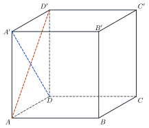
Trong hình lập phương \(ABCD.A'B'C'D'\), vị trí tương đối của hai đường thẳng \(AD'\) và \(A'D\) là…
Answer: c. The two lines are intersecting.
Đáp án c. Hai đường thẳng đó cắt nhau.
In the pyramid \(S.ABCD\) with a parallelogram base, \(N, P\) are the midpoints of \(SB, SC\). The line \(NP\) is parallel to…
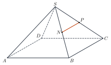
Cho hình chóp \(S.ABCD\) có đáy là hình bình hành, \(N, P\) lần lượt là trung điểm của \(SB, SC\). Đường thẳng \(NP\) song song với…
Answer: c. \(NP\) is a midline of triangle \(SBC\), so \(NP\parallel BC\); and \(ABCD\) is a parallelogram.
Đáp án c. \(NP\) là đường trung bình của tam giác \(SBC\) nên \(NP\parallel BC\); lại có \(ABCD\) là hình bình hành.
The pyramid \(S.ABCD\) has a parallelogram base. The line of intersection of \((SAD)\) and \((SBC)\) is…
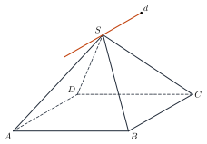
Cho hình chóp \(S.ABCD\) có đáy là hình bình hành. Giao tuyến của \((SAD)\) và \((SBC)\) là…
Answer: a. The planes contain the parallel lines \(AD\) and \(BC\) and share \(S\), so the line of intersection passes through \(S\) and is parallel to \(AD\).
Đáp án a. Hai mặt phẳng chứa hai đường thẳng song song \(AD\), \(BC\) và có điểm chung \(S\) nên giao tuyến qua \(S\) và song song với \(AD\).
In the tetrahedron \(ABCD\), \(M\in AB\), \(N\in AC\) with \(\dfrac{AM}{AB}=\dfrac{AN}{AC}=\dfrac{3}{4}\) and \(BC=20\). Then \(MN\parallel BC\) and \(MN=\)…
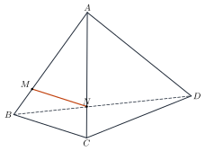
Cho tứ diện \(ABCD\), \(M\in AB\), \(N\in AC\) sao cho \(\dfrac{AM}{AB}=\dfrac{AN}{AC}=\dfrac{3}{4}\) và \(BC=20\). Khi đó \(MN\parallel BC\) và \(MN=\)…
Answer: a. Thales: \(MN=\dfrac{3}{4}\cdot20=15\).
Đáp án a. Định lí Thalès: \(MN=\dfrac{3}{4}\cdot20=15\).
Which statement about two lines in space is NOT true?
Mệnh đề nào sau đây về hai đường thẳng trong không gian là sai?
Answer: c. Parallel lines must be coplanar; skew lines are not coplanar.
Đáp án c. Hai đường thẳng song song phải đồng phẳng; hai đường thẳng chéo nhau thì không đồng phẳng.
In the tetrahedron \(ABCD\) with \(AC\perp BD\), \(M, N, P, Q\) are the midpoints of \(AB, BC, CD, DA\). The quadrilateral \(MNPQ\) is…
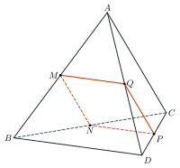
Cho tứ diện \(ABCD\) có \(AC\perp BD\); \(M, N, P, Q\) lần lượt là trung điểm của \(AB, BC, CD, DA\). Tứ giác \(MNPQ\) là…
Answer: c. \(MN\parallel PQ\parallel AC\), \(MN=PQ=\dfrac12AC\); \(NP\parallel MQ\parallel BD\), \(NP=MQ=\dfrac12BD\).
Đáp án c. \(MN\parallel PQ\parallel AC\), \(MN=PQ=\dfrac12AC\); \(NP\parallel MQ\parallel BD\), \(NP=MQ=\dfrac12BD\).
The pyramid \(S.ABCD\) has a parallelogram base; \(M, N\) are the midpoints of \(SA, SB\). The quadrilateral \(MNCD\) is…
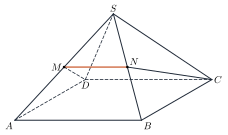
Cho hình chóp \(S.ABCD\) có đáy là hình bình hành; \(M, N\) lần lượt là trung điểm của \(SA, SB\). Tứ giác \(MNCD\) là…
Answer: b. \(MN\parallel AB\parallel DC\) and \(MN=\dfrac12AB=\dfrac12DC\).
Đáp án b. \(MN\parallel AB\parallel DC\) và \(MN=\dfrac12AB=\dfrac12DC\).
In the cube \(ABCD.A'B'C'D'\), the line through \(D'\) parallel to \(AD\) is…
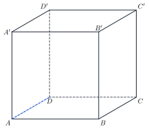
Trong hình lập phương \(ABCD.A'B'C'D'\), đường thẳng qua \(D'\) và song song với \(AD\) là…
Answer: d. \(D'A'\parallel AD\) (the cube has parallel equal edges / faces are squares).
Đáp án d. \(D'A'\parallel AD\).
D. Self-practice: Multiple ChoiceD. Tự luyện: trắc nghiệm
In the cube \(ABCD.A'B'C'D'\), what is the relative position of the lines \(A'B'\) and \(BC\)?
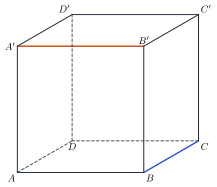
Trong hình lập phương \(ABCD.A'B'C'D'\), vị trí tương đối của hai đường thẳng \(A'B'\) và \(BC\) là…
Answer: c. The two lines are skew.
Đáp án c. Hai đường thẳng đó chéo nhau.
In the pyramid \(S.ABCD\) with a parallelogram base, \(M, N\) are the midpoints of \(SA, SB\). The line \(MN\) is parallel to…
Cho hình chóp \(S.ABCD\) có đáy là hình bình hành, \(M, N\) lần lượt là trung điểm của \(SA, SB\). Đường thẳng \(MN\) song song với…
Answer: c. \(MN\) is a midline of triangle \(SAB\), so \(MN\parallel AB\); and \(ABCD\) is a parallelogram.
Đáp án c. \(MN\) là đường trung bình của tam giác \(SAB\) nên \(MN\parallel AB\); lại có \(ABCD\) là hình bình hành.
The pyramid \(S.ABCD\) has a parallelogram base. The line of intersection of \((SAB)\) and \((SCD)\) is…
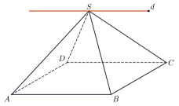
Cho hình chóp \(S.ABCD\) có đáy là hình bình hành. Giao tuyến của \((SAB)\) và \((SCD)\) là…
Answer: b. The planes contain the parallel lines \(AB\) and \(CD\) and share \(S\), so the line of intersection passes through \(S\) and is parallel to \(AB\).
Đáp án b. Hai mặt phẳng chứa hai đường thẳng song song \(AB\), \(CD\) và có điểm chung \(S\) nên giao tuyến qua \(S\) và song song với \(AB\).
In the tetrahedron \(ABCD\), \(M\in AB\), \(N\in AC\) with \(\dfrac{AM}{AB}=\dfrac{AN}{AC}=\dfrac{2}{5}\) and \(BC=20\). Then \(MN\parallel BC\) and \(MN=\)…
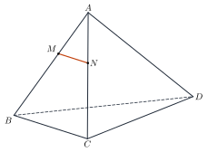
Cho tứ diện \(ABCD\), \(M\in AB\), \(N\in AC\) sao cho \(\dfrac{AM}{AB}=\dfrac{AN}{AC}=\dfrac{2}{5}\) và \(BC=20\). Khi đó \(MN\parallel BC\) và \(MN=\)…
Answer: d. Thales: \(MN=\dfrac{2}{5}\cdot20=8\).
Đáp án d. Định lí Thalès: \(MN=\dfrac{2}{5}\cdot20=8\).
Which statement about two lines in space is true?
Mệnh đề nào sau đây về hai đường thẳng trong không gian là đúng?
Answer: b. Parallel lines must be coplanar; skew lines are not coplanar.
Đáp án b. Hai đường thẳng song song phải đồng phẳng; hai đường thẳng chéo nhau thì không đồng phẳng.
In the tetrahedron \(ABCD\), \(M, N, P, Q\) are the midpoints of \(AB, BC, CD, DA\). The quadrilateral \(MNPQ\) is…
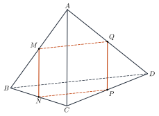
Cho tứ diện \(ABCD\); \(M, N, P, Q\) lần lượt là trung điểm của \(AB, BC, CD, DA\). Tứ giác \(MNPQ\) là…
Answer: c. \(MN\parallel PQ\parallel AC\), \(MN=PQ=\dfrac12AC\); \(NP\parallel MQ\parallel BD\), \(NP=MQ=\dfrac12BD\).
Đáp án c. \(MN\parallel PQ\parallel AC\), \(MN=PQ=\dfrac12AC\); \(NP\parallel MQ\parallel BD\), \(NP=MQ=\dfrac12BD\).
The pyramid \(S.ABCD\) has a parallelogram base; \(M, N\) are the midpoints of \(SC, SD\). The quadrilateral \(MNAB\) is…
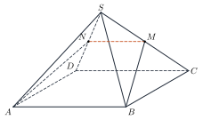
Cho hình chóp \(S.ABCD\) có đáy là hình bình hành; \(M, N\) lần lượt là trung điểm của \(SC, SD\). Tứ giác \(MNAB\) là…
Answer: d. \(MN\parallel CD\parallel BA\) and \(MN=\dfrac12CD=\dfrac12BA\).
Đáp án d. \(MN\parallel CD\parallel BA\) và \(MN=\dfrac12CD=\dfrac12BA\).
In the cube \(ABCD.A'B'C'D'\), the line through \(A\) parallel to \(BB'\) is…
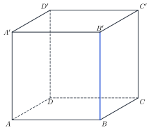
Trong hình lập phương \(ABCD.A'B'C'D'\), đường thẳng qua \(A\) và song song với \(BB'\) là…
Answer: b. \(AA'\parallel BB'\) (the cube has parallel equal edges / faces are squares).
Đáp án b. \(AA'\parallel BB'\).
D. Self-practice: Multiple ChoiceD. Tự luyện: trắc nghiệm
In the cube \(ABCD.A'B'C'D'\), what is the relative position of the lines \(A'D'\) and \(BB'\)?
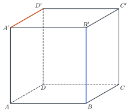
Trong hình lập phương \(ABCD.A'B'C'D'\), vị trí tương đối của hai đường thẳng \(A'D'\) và \(BB'\) là…
Answer: c. The two lines are skew.
Đáp án c. Hai đường thẳng đó chéo nhau.
In the pyramid \(S.ABCD\) with a parallelogram base, \(M, Q\) are the midpoints of \(SA, SD\). The line \(MQ\) is parallel to…
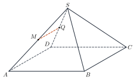
Cho hình chóp \(S.ABCD\) có đáy là hình bình hành, \(M, Q\) lần lượt là trung điểm của \(SA, SD\). Đường thẳng \(MQ\) song song với…
Answer: a. \(MQ\) is a midline of triangle \(SAD\), so \(MQ\parallel AD\); and \(ABCD\) is a parallelogram.
Đáp án a. \(MQ\) là đường trung bình của tam giác \(SAD\) nên \(MQ\parallel AD\); lại có \(ABCD\) là hình bình hành.
The pyramid \(S.ABCD\) has a trapezoid base with \(AB\parallel CD\). The line of intersection of \((SAB)\) and \((SCD)\) is…
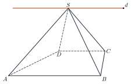
Cho hình chóp \(S.ABCD\) có đáy là hình thang với \(AB\parallel CD\). Giao tuyến của \((SAB)\) và \((SCD)\) là…
Answer: c. The planes contain the parallel lines \(AB\) and \(CD\) and share \(S\), so the line of intersection passes through \(S\) and is parallel to \(AB\).
Đáp án c. Hai mặt phẳng chứa hai đường thẳng song song \(AB\), \(CD\) và có điểm chung \(S\) nên giao tuyến qua \(S\) và song song với \(AB\).
In the tetrahedron \(ABCD\), \(M\in AB\), \(N\in AC\) with \(\dfrac{AM}{AB}=\dfrac{AN}{AC}=\dfrac{2}{3}\) and \(BC=12\). Then \(MN\parallel BC\) and \(MN=\)…
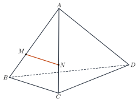
Cho tứ diện \(ABCD\), \(M\in AB\), \(N\in AC\) sao cho \(\dfrac{AM}{AB}=\dfrac{AN}{AC}=\dfrac{2}{3}\) và \(BC=12\). Khi đó \(MN\parallel BC\) và \(MN=\)…
Answer: c. Thales: \(MN=\dfrac{2}{3}\cdot12=8\).
Đáp án c. Định lí Thalès: \(MN=\dfrac{2}{3}\cdot12=8\).
Which statement is false?
Mệnh đề nào sau đây sai?
Answer: b. Parallel lines must be coplanar; skew lines are not coplanar.
Đáp án b. Hai đường thẳng song song phải đồng phẳng; hai đường thẳng chéo nhau thì không đồng phẳng.
In the tetrahedron \(ABCD\) with \(AC=BD\), \(M, N, P, Q\) are the midpoints of \(AB, BC, CD, DA\). The quadrilateral \(MNPQ\) is…
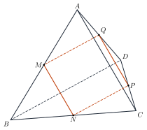
Cho tứ diện \(ABCD\) có \(AC=BD\); \(M, N, P, Q\) lần lượt là trung điểm của \(AB, BC, CD, DA\). Tứ giác \(MNPQ\) là…
Answer: d. \(MN\parallel PQ\parallel AC\), \(MN=PQ=\dfrac12AC\); \(NP\parallel MQ\parallel BD\), \(NP=MQ=\dfrac12BD\).
Đáp án d. \(MN\parallel PQ\parallel AC\), \(MN=PQ=\dfrac12AC\); \(NP\parallel MQ\parallel BD\), \(NP=MQ=\dfrac12BD\).
The pyramid \(S.ABCD\) has a parallelogram base; \(M, N\) are the midpoints of \(SB, SC\). The quadrilateral \(MNDA\) is…
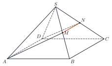
Cho hình chóp \(S.ABCD\) có đáy là hình bình hành; \(M, N\) lần lượt là trung điểm của \(SB, SC\). Tứ giác \(MNDA\) là…
Answer: c. \(MN\parallel BC\parallel AD\) and \(MN=\dfrac12BC=\dfrac12AD\).
Đáp án c. \(MN\parallel BC\parallel AD\) và \(MN=\dfrac12BC=\dfrac12AD\).
In the cube \(ABCD.A'B'C'D'\), the line through \(A\) parallel to \(CC'\) is…
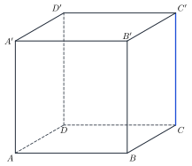
Trong hình lập phương \(ABCD.A'B'C'D'\), đường thẳng qua \(A\) và song song với \(CC'\) là…
Answer: c. \(AA'\parallel CC'\) (the cube has parallel equal edges / faces are squares).
Đáp án c. \(AA'\parallel CC'\).
8Common MistakesLỗi thường gặp
“No common point” means parallel. The lines may be skew.
“Không có điểm chung” là song song. Hai đường có thể chéo nhau.
Using the midline without the midpoints. Check that \(M,N\) are really midpoints of two sides.
Dùng đường trung bình khi chưa có trung điểm. Cần chỉ ra \(M,N\) là trung điểm của hai cạnh.
Counting a pair twice. The pair \((AB,CD)\) and \((CD,AB)\) is one pair.
Đếm một cặp hai lần. Cặp \((AB,CD)\) và \((CD,AB)\) chỉ là một cặp.
Forgetting that the lines must be in one plane. Parallel lines are coplanar.
Quên điều kiện đồng phẳng. Hai đường thẳng song song phải cùng nằm trong một mặt phẳng.
9Lesson SummaryTổng kết
Two lines in space: parallel, intersecting or skew.
Hai đường thẳng trong không gian: song song, cắt nhau hoặc chéo nhau.
Transitive property: \(a\parallel c\), \(b\parallel c\) imply \(a\parallel b\).
Tính chất bắc cầu: \(a\parallel c\), \(b\parallel c\) thì \(a\parallel b\).
Midline: \(MN\parallel AB\), \(MN=\dfrac12AB\).
Đường trung bình: \(MN\parallel AB\), \(MN=\dfrac12AB\).
Key English words: parallel, skew, intersecting, midline.
Từ tiếng Anh cần nhớ: parallel, skew, intersecting, midline.